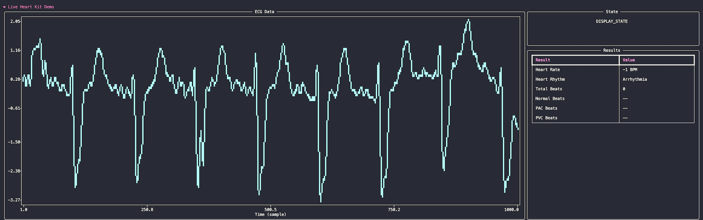

HeartKit Arrhythmia Tutorial
This tutorial shows running an end-to-end heart arrhythmia classifier on the Apollo 4 EVB. The basic flow chart is depicted below.
flowchart LR
S[1. Collect] -->| | P[2. Preprocess] --> M[3. Arrhythmia Model] --> L[4. Display]In the first stage, 4 seconds of sensor data is collected- either directly from the MAX86150 sensor or test data from the PC. In stage 2, the data is preprocessed by bandpass filtering and standardizing. The data is then fed into the CNN network to perform inference. Finally, in stage 4, the ECG data will be classified as normal (NSR), arrhythmia (AFIB/AFL) or inconclusive. Inconclusive is assigned when the prediction confidence is less than a pre-defined threshold (e.g. 90%).
Note
A reference arrhythmia model (./evb/src/arrhythmia_model_buffer.h) is included and can be used to quickly evaluate the hardware. The model is trained on Icentia11k dataset that has the associated non-commercial license. The model is intended for evaluation purposes only and cannot be used for commercial use without permission.
Demo Setup
Please follow EVB Setup Guide to prepare EVB and connect to PC. To use the pre-trained model, please skip to Run Demo Section.
1. Train the arrhythmia model w/ given configuration
Note
Due to the large dataset and class imbalance, the batch size and buffer size are large for arrhythmia training to ensure properly shuffling of patients as well as classes. The first epoch will take much longer as it fills up this buffer. To train on dedicated GPUs, it's recommended to have at least 10 GB of VRAM.
2. Evaluate the arrhythmia model's performance
3. Export the model into a TFLM header file
The exported model will be placed into ./evb/src/arrhythmia_model_buffer.h. Please review ./evb/src/constants.h and ensure settings match configuration file.
Run Demo
Please open three terminals to ease running the demo. We shall refer to these as EVB Terminal, REST Terminal and PC Terminal.
1. Run client on EVB
Run the following commands in the EVB Terminal. This will compile the EVB binary and flash it to the EVB. The binary will be located in ./evb/build.
Now press the reset button on the EVB. This will allow SWO output to be captured.
2. Run REST server on host PC
In REST Terminal, start the REST server on the PC.
3. Run client and UI on host PC:
In PC Terminal, start the PC client (console UI).
Upon start, the client will scan and connect to the EVB serial port. If no port is detected after 30 seconds, the client will exit. If successful, the client should discover the USB port and start updating UI.
4. Trigger start
Now that the three tasks are running, press either Button 1 (BTN1) or Button 2 (BTN2) on the EVB to start the demo. Pressing Button 1 will use live sensor data whereas Button 2 will use test dataset supplied by the PC. In EVB Terminal, the EVB should be printing the stage it's in (e.g INFERENCE STAGE) and any results. In PC Terminal, the PC should be plotting the data along with classification results. Once finished, Button 1 or Button 2 can be pressed to stop capturing.

Tip
Please use a monospaced font in the terminal for proper alignment of the plot.
To shutdown the PC client, a keyboard interrupt can be used (e.g [CTRL]+C) in PC Terminal.
Likewise, a keyboard interrupt can be used (e.g [CTRL]+C) to stop the PC REST server in REST Terminal.